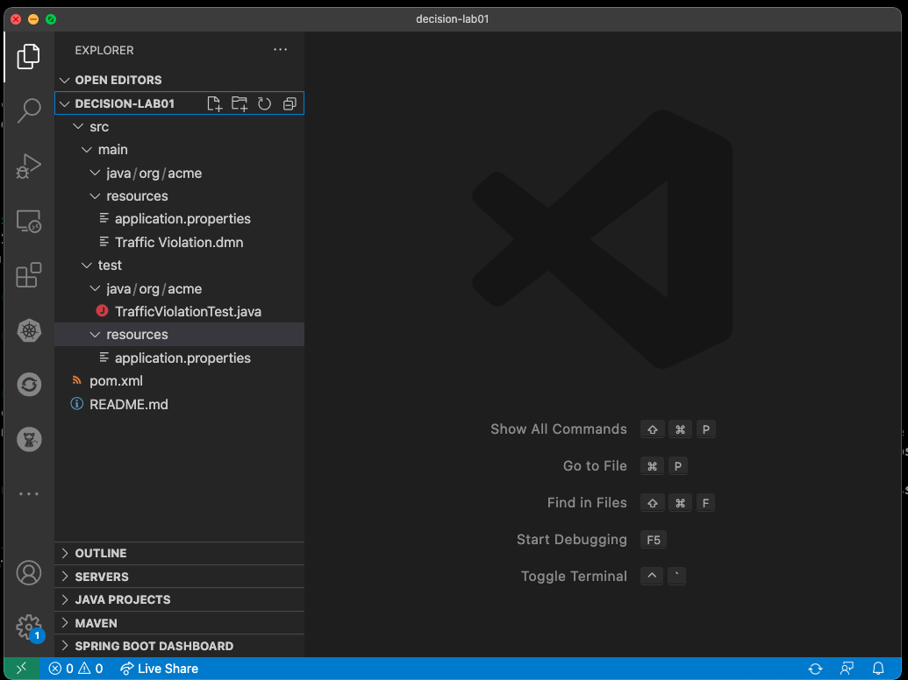
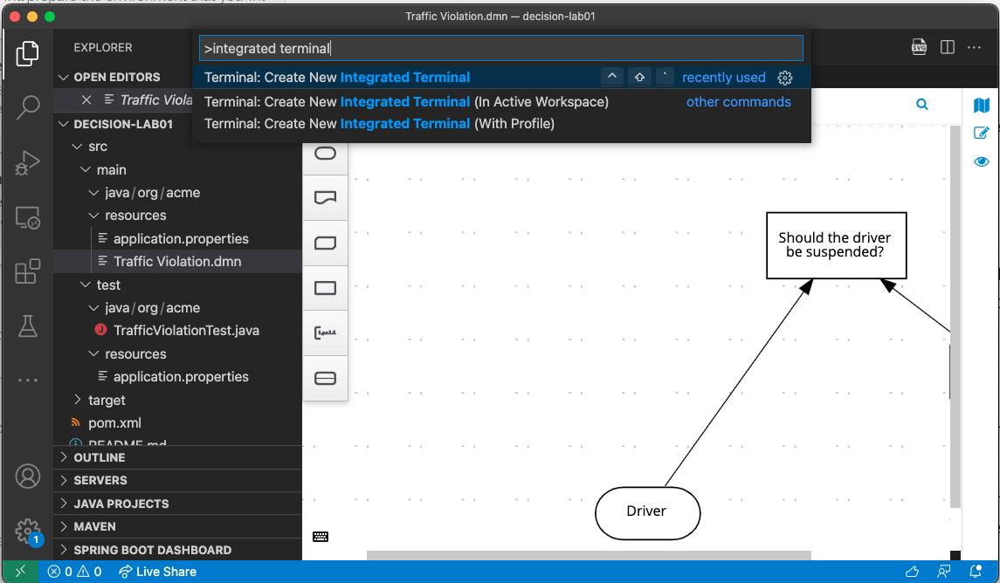
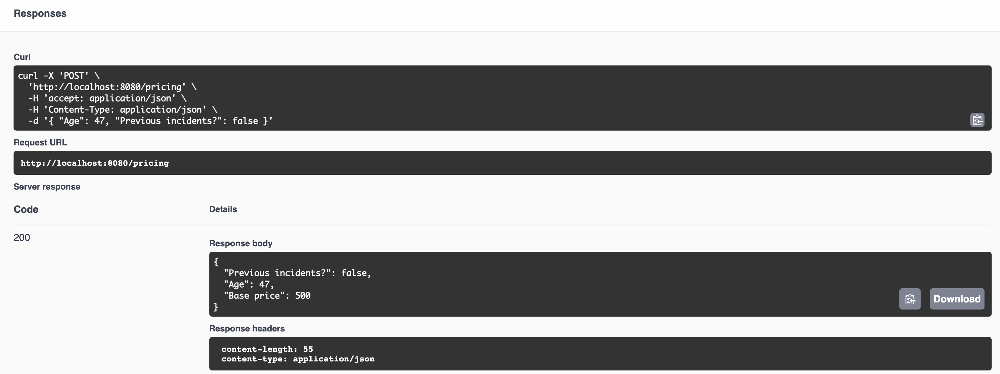
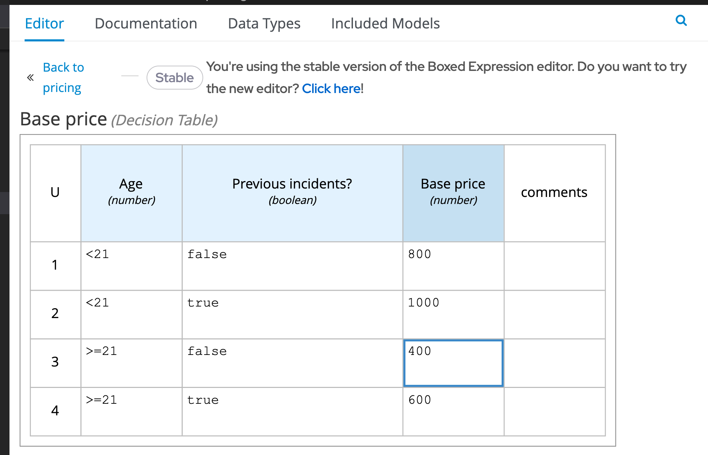
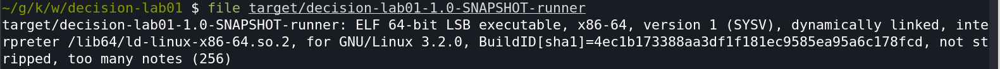

Build a Kogito-based Decision Services
This lab introduces you to how you can get started with decision projects that are based on Kogito and Quarkus, how to deploy and validate it’s decisions.
-
Create a new quarkus-based decision microservice
-
Try the Kogito tooling in VScode
-
Run the application
-
Package and run the compiled kogito application locally
Creating a new decision project based on Kogito and Quarkus
In order to create a new decision project based on Quarkus, we can use a Maven archetype to generate the Quarkus based project with the required dependencies for our decision application.
-
Navigate to a folder of your preference, and run the following command. Maven will create a new project with the name
decision-lab01.mvn io.quarkus.platform:quarkus-maven-plugin:2.8.2.Final:create \ -DprojectGroupId=org.acme \ -DprojectArtifactId=decision-lab01 \ -Dextensions="kogito-quarkus-decisions,quarkus-smallrye-openapi,quarkus-resteasy-jackson"
Examine the project and decision
Let’s open the project so we can look at its structure and files. In
your terminal, you can open the project using the VScode command code:
$ code decision-lab01/You should be able to navigate through the project structure.

Notice that:
-
There is a DMN sample,
pricing.dmn. This decision determines a base price quotation based on criterias like age and occurrence of previous incidents. -
There is a jUnit test
PricingTest.java. This jUnit tests the REST endpoint that is generated automatically by Kogito. Further on the lab, we will work with the Test Scenario, a graphical tool that allows users to unit test the decision model.
Running the project
It’s time to try out this project. To make things easier, you can use the Integrated Terminal feature in VSCode.
-
Open the integrated terminal in VSCode by by pressing
cmd+shift+porctrl+shift+p -
Then, search for New Terminal and select it. See below:

In the recently opened integrated terminal, you can start the application.
-
Start the application in dev mode:
$ mvn quarkus:dev
-
Open your browser and access http://localhost:8080/q/swagger-ui/
-
You should see three REST endpoints that were automatically generated by Kogito.
-
Select the POST request for pricing and click on the Try it out button.
-
You can use the following JSON as the Request Input to validate the decision about if the driver should be suspended or not:
{ "Age": 47, "Previous incidents?": false }
The output should show the final decision Base Price but also the values of the input nodes. If there were more decisions made in this processing, the outputs would also be outputed as a result.

Updating the Decision
When using the Kogito extension with Quarkus, you can also take advantage of the hot reload features during the development of your decision. Let’s give it a try.
-
Still with the server running go back to the decision project in VSCode.
-
Open the
pricing.dmndecision file, and select the ``Base Price'' node. Click on the edit button.
Now, let’s change our business rule where the base price for people over 21 and without previous incidents should cost 400 instead of 500.
-
On the literal expression, change the number to 400. 
-
Save the DMN file.
-
Go back to your browser, and click on "Execute" to execute the exact same request.
-
Check the response and confirm that differently than the first decision, the cost for the insurance is now 400.
Before moving forward, remember to also update the unit test src/test/java/org/acme/PricingTest.java to match the new value of 400, or to revert the value back to 500 so it matches the unit tests.
Awesome! We’ve implemented our first DMN decision service in Kogito, used the hot/live reload capabilities of Quarkus, and we’ve seen how these changes are immediately reflected in our Swagger UI. Finally, we’ve fired a RESTful request to our DMN decision microservice and saw cloud-native decisioning with DMN in action.
Packaging and running the application
We will now package the application in an executable JAR file. If you’ve
not yet stopped your application running in Quarkus dev-mode, please do
that now. In the terminal in which the application is running, press
CTRL-C to stop the application.
Packaging the decision service
In a terminal, execute the following Maven command to package the application:
$ mvn clean packageIt produces 2 jar files in the target directory:
-
decision-lab01-1.0-SNAPSHOT.jar- containing just the classes and resources of the projects, it’s the regular artifact produced by the Maven build. -
target/quarkus-app/quarkus-run.jar- being an executable jar. Be aware that it’s not an über-jar as the dependencies are copied into thetarget/libdirectory.
You can see the files of you execute the following command in your terminal:
ls -l target/quarkus-app/lib/main/*.jarRunning the executable JAR
You can run the packaged application by executing the following command in a terminal:
$ java -jar target/quarkus-app/quarkus-run.jarTo test the application, you can use the Swagger UI we used previously
by opening your browser, accessing http://localhost:8080/q/swagger-ui/.
You can use the POST request for pricing and click on the
Try it out button. You can use the same JSON as the Request
Input to validate the server response:
{ "Age": 47, "Previous incidents?": false }
When we’re not running in mvn quarkus:dev mode, the Swagger UI
is not available. However, it can be enabled by adding the following
configuration to your src/main/resources/application.properties file:
quarkus.swagger-ui.always-include=true
|
The Class-Path entry of the MANIFEST.MF file in the runner JAR
explicitly lists the jars from the lib directory. So if you want to
deploy your application somewhere, you need to copy the runner JAR as
well as the lib directory. If you want to create an Uber-JAR with
everything included, you can use mvn package -DuberJar.
Finally let’s stop the application. Go back to the terminal in which the
Kogito application is running and stop the application once again by
pressing CTRL-C.
Native decision services (Optional)
We’ve packaged up the Kogito app as an executable JAR and learned a bit more about the mechanics of packaging. In the next step, we’ll continue our journey and build a native image.
Let’s now produce a native executable for our application. It improves the startup time of the application, and produces a minimal disk footprint. The executable would have everything to run the application including the ``JVM'' (shrunk to be just enough to run the application), and the application.
We will be using GraalVM, which includes a native compiler for producing native images for a number of languages, including Java.
Building a native image
Within the pom.xml file of our application is the declaration for the
Quarkus Maven plugin which contains a profile for native-image:

We use a profile because, you will see very soon, packaging the native image takes a few seconds (or rather: minutes). However, this compilation time is only incurred once, as opposed to every time the application starts, which is the case with other approaches for building and executing JARs.
-
In your terminal, if the application is still running, stop it with
Ctrl-C. -
Next, create a native executable by executing the followig Maven command:
mvn clean package -Pnative -DskipTests=true

Native images are compiled for the architecture on which the image is
compiled. When you run a native image compilation on a Linux machine,
the target OS of the native executable is Linux. When you build a native
image on macOS, the target operating system is macOS. Hence, an
executable built on macOS will not run on a Linux platform. If you need
to build native Linux binaries when on other OS’s like Windows or macOS,
you can use -Dquarkus.native.container-runtime=[podman | docker].
You’ll need either Docker or Podman installed
depending on which container runtime you want to use!
The native compilation will take a couple of minutes to finish. Wait for it!
In addition to the regular files, the build also produces
target/decision-lab01-1.0-SNAPSHOT-runner. This is a native binary for
your operating system. If you’re on a Linux or macOS system, you can
determine the file-type with the file command:
file target/decision-lab01-1.0-SNAPSHOT-runner
Running a native image
Since you’re building the native image for your own system, you can simply run it by executing the file. For example:
target/decision-lab01-1.0-SNAPSHOT-runnerNotice the amazingly fast startup time:

That’s 19 milliseconds (nineteen!!!) to start a business application, exposing a REST API and ready to serve requests!
On Linux and macOS, you can report the memory usage of your application
with the ps utility. Notice the extremely low memory usage as
reported:
$ ps -o pid,rss,command -p $(pgrep -f runner)You should see something like:
PID RSS COMMAND
37449 25444 target/decision-lab01-1.0-SNAPSHOT-runnerThis shows that our process is taking around 25 MB of memory (Resident Set Size, or RSS). Pretty compact!
The RSS and memory usage of any app, including Quarkus, will vary depending your specific environment, and will rise as the application experiences load.
Make sure the app is still working as expected by firing a new request to our decision service using the Swagger UI like we did in the previous steps.
Next Steps
Congratulations!!! You’ve now built a Kogito-based decision application as an executable JAR and a native binary. Well done.
In this lab, we’ve learned how to create a new decision service and how to take advantadge of the hot reload feature for Decision Model & Notation (DMN). A foundational aspect of Kogito is that is uses open standards in the business automation space, like DMN to implement business decisions automation. Kogito brings these technologies into the cloud-native world, allowing developers and businesses to implement and deploy business logic in a hybrid-cloud environment.
You’ve finished the getting started exercise. Next, we will work into creating an event-driven decision application.